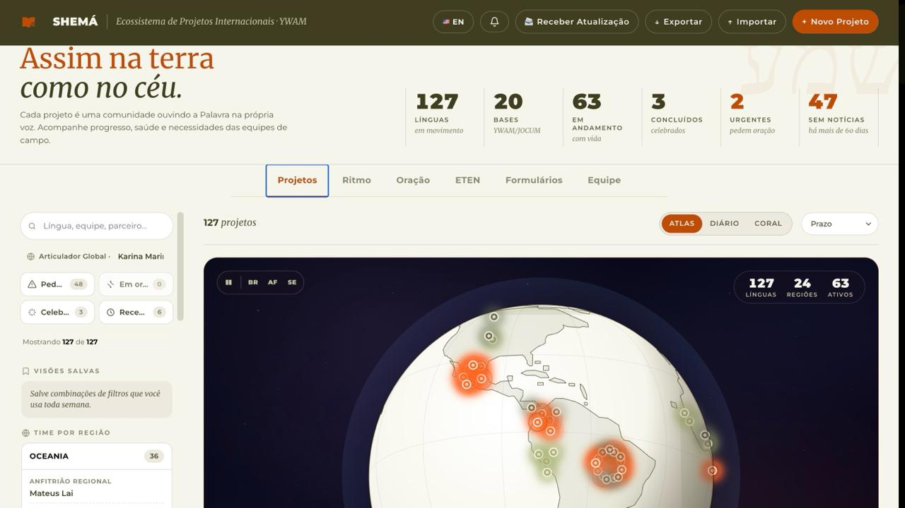
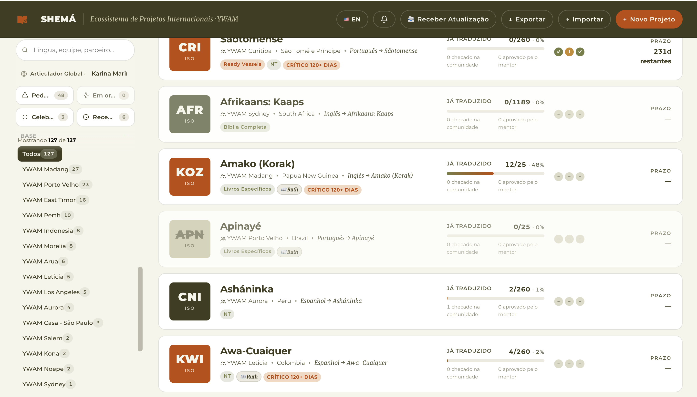

A barra lateral, em detalhe
Encontrar é
fácil.
Busca, atalhos, filtros e visões salvas — tudo na barra lateral dos Projetos. Veja como achar exatamente o que procura entre 127 línguas.
A página principal

A lista de projetos

Quatro formas de filtrar.
Busca livre no topo, atalhos combináveis, o painel de times por região, e os filtros detalhados. Tudo se soma para refinar a lista.
No topo da barra
Buscar e contar.
Digite língua, equipe ou parceiro — a lista filtra enquanto você escreve.
A contagem mostra quantos projetos sobraram após os filtros — e "Limpar tudo" zera num clique.
A linha "Você é Karina Marinho" identifica quem está usando — e personaliza o que cada um vê.
Atalhos combináveis
Quatro chips, um clique cada.
Toque um ou mais — eles se somam. Cada chip mostra quantos projetos atende.
Filtros detalhados
Filtre por tudo que importa.
Sempre à vista: Status, Base e Saúde. Em "Mais filtros", todo o resto — cada opção com a sua contagem.
Filtre pela região.
O painel "Time por região" mostra cada continente com seus três papéis. Clique no cabeçalho e a lista filtra para aquela região.
Para a sua rotina
Salve a sua vista.
Montou um conjunto de filtros que usa toda semana? Salve como uma "visão" e volte a ela com um clique — sem refiltrar tudo de novo.
Combine atalhos e filtros como quiser.
Dê um nome — "Minha vista de segunda".
A visão aplica todos os filtros de novo.
Do todo ao detalhe, num olhar.
Buscar, filtrar, combinar e salvar — para que nenhuma equipe se perca entre as 127 línguas.